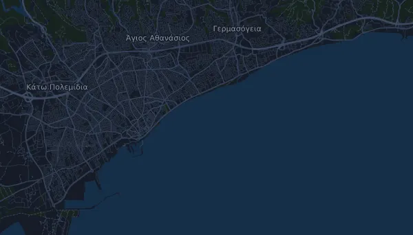

XM Limassol Marathon – XM Marathon Race 42,2 km
- Distanse
- 42,2 km
- Høydemeter
- ↑ 173 m
- Høyeste punkt
- 29 moh.
- Underlag
- Vei
- Karakter
- Flat
- Start
- kl. 07:15
- Drikkestasjoner
- 16
Høydeprofil
Forbered deg med Mila
Mila er en løpecoach i en app. Legger du et løp inn i planen din, planlegger coachen ukene fram til start etter formen din, og gir deg en tidsprognose og en plan for tempo, drikke og energi i løypa.

Rett økt. Rett dag.
Løypa

Om løypa
XM Limassol Marathon – XM Marathon Race er et gateløp på 42,2 km i Limassol, Kypros. Løypa har 173 høydemeter oppover og 172 nedover, 4,1 m per km, og regnes dermed som flat. Høyeste punkt ligger 29 moh. og laveste −1 moh.
Den største stigningen starter ved km 24,6: 26 høydemeter på 2,6 km med 1,0 % i snitt, opp til 29 moh.
Arrangøren har 16 drikkestasjoner langs løypa, den første ved km 2,5 og den siste ved km 40,0.
I Mila-appen beskriver coachen løypa i detalj på ditt språk og planlegger tempo og energi for den.
Stigninger
| Starter ved | Lengde | Høydemeter | Stigning | Topp (moh.) |
|---|---|---|---|---|
| km 24,6 | 2,6 km | 26 m | 1,0 % | 29 |
Før start
Drikkestasjoner
| Ved | Her finnes |
|---|---|
| km 2,5 | vann, sportsdrikk, mat |
| km 5,0 | vann, sportsdrikk, mat |
| km 7,5 | vann, sportsdrikk, mat |
| km 10,0 | vann, sportsdrikk, mat |
| km 12,5 | vann, sportsdrikk, mat |
| km 15,0 | vann, sportsdrikk, mat |
| km 17,5 | vann, sportsdrikk, mat |
| km 20,0 | vann, sportsdrikk, mat |
| km 22,5 | vann, sportsdrikk, mat |
| km 25,0 | vann, sportsdrikk, mat |
| km 27,5 | vann, sportsdrikk, mat |
| km 30,0 | vann, sportsdrikk, mat |
| km 32,5 | vann, sportsdrikk, mat |
| km 35,0 | vann, sportsdrikk, mat |
| km 37,5 | vann, sportsdrikk, mat |
| km 40,0 | vann, sportsdrikk, mat |
Starttider
- kl. 07:15
Kilde: limassolmarathon.com, hentet 15. oktober 2026
Tempotabell
XM Limassol Marathon – XM Marathon Race 42,2 km på 3:00:00 – tid per km og mellomtider
4:16 per km · km 10: 42:38 · km 21,1: 1:29:57 · km 30: 2:07:54 · km 40: 2:50:32 · mål: 3:00:00
XM Limassol Marathon – XM Marathon Race 42,2 km på 3:30:00 – tid per km og mellomtider
4:58 per km · km 10: 49:44 · km 21,1: 1:44:57 · km 30: 2:29:13 · km 40: 3:18:57 · mål: 3:30:00
XM Limassol Marathon – XM Marathon Race 42,2 km på 4:00:00 – tid per km og mellomtider
5:41 per km · km 10: 56:51 · km 21,1: 1:59:57 · km 30: 2:50:32 · km 40: 3:47:23 · mål: 4:00:00
XM Limassol Marathon – XM Marathon Race 42,2 km på 4:30:00 – tid per km og mellomtider
6:24 per km · km 10: 1:03:57 · km 21,1: 2:14:56 · km 30: 3:11:51 · km 40: 4:15:48 · mål: 4:30:00
Tidene forutsetter jevnt tempo hele veien. Det er ren regning, ingen prognose: i bakker, i trengsel og ved drikkestasjoner varierer tempoet.
Vanlige spørsmål
Når går XM Limassol Marathon – XM Marathon Race 42,2 km?
XM Limassol Marathon – XM Marathon Race 42,2 km går søndag 4. april 2027. Sjekk dato og starttid hos arrangøren.
Når starter XM Limassol Marathon – XM Marathon Race 42,2 km?
Ifølge arrangøren: kl. 07:15.
Hvor langt er XM Limassol Marathon – XM Marathon Race 42,2 km, og hvor mange høydemeter er det?
Løpet er 42,2 km langt med 173 høydemeter oppover og 172 nedover. Høyeste punkt ligger 29 moh.
Hvordan er løypa i XM Limassol Marathon – XM Marathon Race 42,2 km?
Løypa regnes som flat, med 4,1 høydemeter per km i snitt. Den har én stigning på minst 25 høydemeter, ved km 24,6: 26 høydemeter på 2,6 km. Start og mål ligger på samme sted. Underlaget er vei.
Er det drikkestasjoner i XM Limassol Marathon – XM Marathon Race 42,2 km?
Ja. Arrangøren har 16 drikkestasjoner: km 2,5 (vann, sportsdrikk, mat); km 5,0 (vann, sportsdrikk, mat); km 7,5 (vann, sportsdrikk, mat); km 10,0 (vann, sportsdrikk, mat); km 12,5 (vann, sportsdrikk, mat); km 15,0 (vann, sportsdrikk, mat); km 17,5 (vann, sportsdrikk, mat); km 20,0 (vann, sportsdrikk, mat); km 22,5 (vann, sportsdrikk, mat); km 25,0 (vann, sportsdrikk, mat); km 27,5 (vann, sportsdrikk, mat); km 30,0 (vann, sportsdrikk, mat); km 32,5 (vann, sportsdrikk, mat); km 35,0 (vann, sportsdrikk, mat); km 37,5 (vann, sportsdrikk, mat); km 40,0 (vann, sportsdrikk, mat).
Hvordan legger jeg opp farten i XM Limassol Marathon – XM Marathon Race 42,2 km?
Sikt på en jevn innsats hele veien, og hold igjen de første kilometerne når beina føles friske og feltet drar fra. Løypa er flat, så et jevnt tempo per kilometer fungerer godt. I Mila får du en tempoplan for akkurat denne løypa etter din egen form.
Flere løp som dette
Flere løp i nærheten
- Brighton Marathon 42,2 km4. april 2027 · Brighton, Storbritannia
- Credit Union Cherry Blossom Ten Mile Run 16 km4. april 2027 · Washington, D.C., USA
- BERLINER HALBMARATHON 21 km4. april 2027 · Berlin, Tyskland
Forbered deg med Mila
Rett økt. Rett dag.
Opplysningene kommer fra løypefilen og arrangørens informasjon. Sjekk dato, starttider og regler hos arrangøren.
Mila er ikke tilknyttet, sponset av eller godkjent av arrangøren eller løpets sponsorer. Navn og varemerker tilhører sine eiere. Arrangør eller rettighetshaver? Be om endring eller fjerning